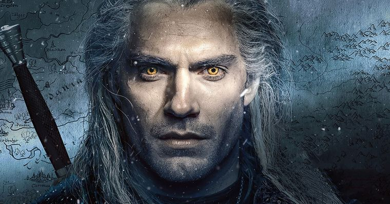
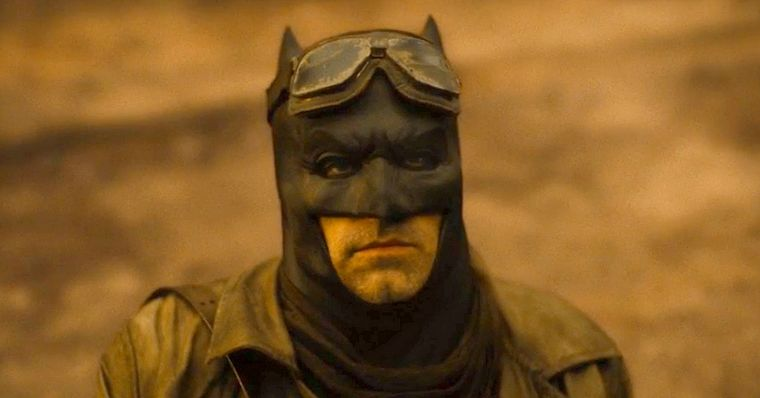
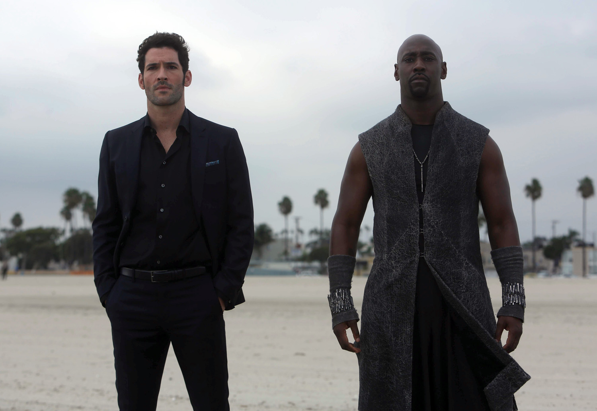

THE WITCHER: BLOOD ORIGIN ESCALA LAURENCE O’FUARAIN, DE GAME OF THRONES, COMO PROTAGONISTA
27/03/2021 - cristiano_rantin@gmail.com

The Witcher: Blood Origin, a série que contará eventos anteriores ao que vemos em The Witcher, acaba de
ganhar um novo ator no elenco. Segundo o Deadline, Laurence O’Fuarain, de Vikings e Game of Thrones,
entrou para o elenco da série como protagonista.
O’Fuarain será Fjall, nascido de um clã guerreiro que jurou proteger o Rei, ele carrega uma grande
cicatriz emocional por ter perdido um ente querido durante uma batalha. Por causa disso, ele não
consegue encontrar paz, seguindo em uma jornada de redenção, ele vai lutar ao lado de aliados
improváveis enquanto leva sua vingança por todo o continente.
Referência
LIGA DA JUSTIÇA: ZACK SNYDER REVELA A PARTE MAIS DIFÍCIL DE GRAVAR NOVA CENA DO KNIGHTMARE
27/03/2021 - batiman@gmail.com

A sequência do futuro Knightmare possui muito mais destaque e importante na Liga da Justiça de Zack
Snyder. Para o diretor, uma sequência do filme mostraria Darkseid invadindo a Terra e destruindo tudo ao
conseguir a Equação Anti-Vida. É por isso que o Flash é enviado a passado, para tentar salvar Lois Lane.
Durante Liga da Justiça tivemos várias cenas no futuro no qual o Darkseid invade a Terra, com algumas
dessas cenas tendo sido gravadas mais recentemente.
Referência
“Muito caos”: saiba como será retorno de Lucifer na Netflix
27/03/2021 - luci@gmail.com

Quando Deus (Dennis Haysbert) vier, muito caos vem junto”, disse o ator ao TV Line, adiantando também o
que esperar desta segunda parte da 5ª temporada. Começamos literalmente dois segundos de onde paramos, e
Amenadiel está absolutamente humilhado porque Deus o viu se comportando daquela maneira com seus irmãos,
já que, como o mais velho, ele realmente deveria ser o que dá exemplo – e ele não estava fazendo isso!”,
contou Woodside.
Além de retornar como o anjo Amenadiel, D.B. Woodside também faz sua estreia como diretor em um dos
episódios da 5ª temporada de Lucifer.
Os novos episódios de Lucifer ainda não tem previsão para chegar na Netflix.
Referência